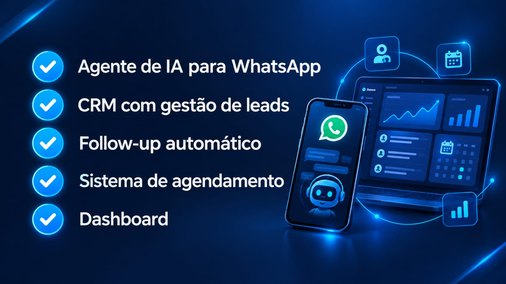

Inteligência artificial · Automação de processos
Agente de IA com CRM e agenda: do WhatsApp ao follow-up
Atender é só o começo. Depois da primeira mensagem, sua empresa precisa registrar o contato, combinar um horário, acompanhar o orçamento e lembrar do retorno. Um agente de IA integrado ao sistema pode apoiar essas etapas, enquanto a equipe acompanha o processo em um só lugar.

O que um agente de IA com CRM e agenda faz?
Um agente de IA com CRM e agenda conecta o atendimento à organização comercial. Ele pode interpretar uma mensagem, consultar informações aprovadas, registrar o contato e apoiar o agendamento, usando as ferramentas e permissões configuradas para a empresa.
Já as automações executam etapas previsíveis: criar um lembrete, avisar o responsável ou mover uma oportunidade de etapa quando uma condição é atendida. A documentação do n8n sobre agentes de IA apresenta essa combinação entre interpretação, ferramentas e fluxos de trabalho.
Na prática, a conversa precisa gerar um próximo passo registrado. Isso ajuda a equipe a saber quem entrou em contato, o que foi solicitado e quando deve retomar o atendimento.
Se você está começando pelo conceito, veja também nosso guia de agentes de IA para pequenas empresas.
Atendimento, CRM Kanban e agenda no mesmo sistema
A proposta da Fábrica de Software reúne agente de IA incluso, CRM com Kanban, agenda, lembretes e notificações. Os fluxos e as integrações são definidos conforme a operação de cada negócio.
| Recurso | Aplicação na rotina |
|---|---|
| Agente de IA | Apoiar o atendimento inicial, esclarecer dúvidas com informações aprovadas e encaminhar solicitações. |
| CRM com Kanban | Organizar oportunidades em etapas como novo contato, atendimento, proposta e fechamento. |
| Agenda | Consultar horários disponíveis e registrar compromissos, conforme a integração contratada. |
| Lembretes | Programar tarefas e retornos para clientes e equipe, com regras de envio definidas. |
| Notificações | Avisar o responsável sobre novos contatos, compromissos e pendências. |
O Kanban é o quadro visual do processo comercial. Cada cartão representa uma oportunidade, com responsável e próxima ação. O histórico da conversa e o andamento da negociação precisam permanecer relacionados para evitar registros soltos.
Conheça nossa página de desenvolvimento de sistemas web sob medida para entender como esses recursos podem ser adaptados à sua operação.
Do WhatsApp ao agendamento: um exemplo de fluxo
Imagine uma empresa que recebe pedidos de orçamento pelo WhatsApp. O exemplo abaixo é ilustrativo: as etapas dependem das integrações disponíveis e das regras aprovadas pelo negócio.
- O cliente envia uma mensagem. O agente identifica o assunto e solicita apenas as informações necessárias para continuar.
- O contato entra no CRM. O sistema consulta se já existe um cadastro, registra a solicitação e atribui um responsável.
- A agenda é consultada. Se houver agendamento no fluxo, o sistema verifica disponibilidade e oferece opções válidas.
- O compromisso é confirmado. Data, horário e serviço são conferidos com o cliente antes do registro definitivo.
- A equipe recebe uma notificação. O responsável acompanha o contexto e assume a conversa quando necessário.
- O próximo passo fica programado. Um lembrete apoia a confirmação do atendimento ou o retorno sobre a proposta.
A estrutura técnica desse processo faz parte de um projeto de automação com inteligência artificial, que combina atendimento, integrações e regras de negócio.
Follow-up automático: como organizar os retornos
Follow-up é o acompanhamento de um contato depois da primeira conversa. Pode ser um retorno sobre orçamento, uma confirmação de visita ou uma tarefa para o vendedor verificar uma pendência.
Para configurar esse acompanhamento, defina o motivo do retorno, o intervalo, o responsável e a condição de encerramento. Se o cliente responder, recusar ou concluir a contratação, o fluxo precisa mudar para evitar mensagens fora de contexto.
Uma configuração inicial pode criar uma tarefa interna quando uma proposta fica sem próxima ação. O envio automático ao cliente pode ser acrescentado depois, conforme a integração do canal, as regras da plataforma e as preferências de contato.
O objetivo é dar continuidade ao atendimento com contexto. Mensagens repetidas, sem relação com a necessidade do cliente, prejudicam a experiência.
Onde esse sistema pode ajudar?
- Clínicas e consultórios: organizar pedidos administrativos de agendamento, confirmações e encaminhamentos à recepção.
- Imobiliárias: registrar o interesse em imóveis, distribuir contatos e acompanhar visitas.
- Empresas de instalação e manutenção: reunir informações para orçamento e programar avaliações técnicas.
- Escritórios e prestadores de serviços: organizar solicitações, reuniões e retornos comerciais.
Em cada segmento, o fluxo deve refletir a rotina real. Um serviço que exige avaliação técnica, por exemplo, pode usar a IA para organizar a solicitação e encaminhá-la ao profissional responsável.
Como implementar sem perder o controle do atendimento
Comece por um processo delimitado, como receber pedidos e organizar o retorno comercial. Antes de ativar o agente, prepare uma base com serviços, horários, perguntas frequentes e critérios de encaminhamento.
Depois, defina quais ações podem ocorrer automaticamente e quais precisam de confirmação humana. Também é necessário configurar acessos, tratamento de falhas, histórico de ações e uma forma simples de chamar a equipe.
O piloto deve testar situações comuns e exceções: cadastro duplicado, cliente que muda de horário, ausência de vagas, pedido fora do escopo e indisponibilidade de uma integração. A equipe precisa conseguir corrigir o registro e continuar o atendimento.
O projeto também pode aproveitar seu site profissional como ponto de entrada de solicitações. Não é necessário trocar todo o site para estudar uma integração.
Quanto custa e como avaliar o resultado?
O investimento depende dos canais, das integrações, do volume de uso, das personalizações e do suporte. Solicite uma proposta que separe implantação, operação e eventuais custos de serviços de terceiros.
Para avaliar o projeto, acompanhe indicadores que a empresa consiga medir antes e depois da implantação:
- Tempo até a primeira resposta útil.
- Contatos com responsável e próxima ação registrados.
- Retornos pendentes e tarefas concluídas.
- Agendamentos confirmados, realizados e cancelados.
- Casos encaminhados à equipe e correções necessárias.
Esses dados ajudam a ajustar o fluxo. Ganhos de produtividade e vendas dependem da implantação, da qualidade das informações e da atuação da equipe; devem ser medidos na operação.
Perguntas frequentes sobre agentes de IA e automação
O agente pode atender pelo WhatsApp?
Sim, quando o projeto dispõe de uma integração compatível e autorizada para esse canal. Confirme na proposta como funciona a conexão, quais ações estarão disponíveis e quais custos se aplicam.
O sistema inclui CRM, agenda e lembretes?
A proposta apresentada pela Fábrica de Software reúne esses recursos com agente de IA incluso. A configuração, as integrações e o escopo de implantação devem constar na contratação.
A IA substitui minha equipe?
O projeto pode assumir etapas repetitivas e apoiar a organização. Negociações, exceções e decisões que exigem avaliação humana precisam ter um responsável e um caminho claro de atendimento.
Posso integrar o CRM ou a agenda que já uso?
Isso depende das APIs, permissões e possibilidades de integração das ferramentas atuais. A viabilidade deve ser verificada antes de prometer sincronização ou migração.
Minha empresa precisa estar no Rio de Janeiro?
A Fábrica de Software está em Vila Isabel, no Rio de Janeiro. Entre em contato para avaliar o atendimento e a implantação conforme a localização e as necessidades do seu negócio.
Fábrica de Software · Rio de Janeiro
Seu atendimento pode ter um próximo passo organizado.
Conheça um sistema com agente de IA incluso, CRM com Kanban, agenda, lembretes e notificações. Conte como sua empresa recebe contatos e acompanha os clientes para avaliarmos o fluxo adequado.
Quero conhecer o sistema de IA